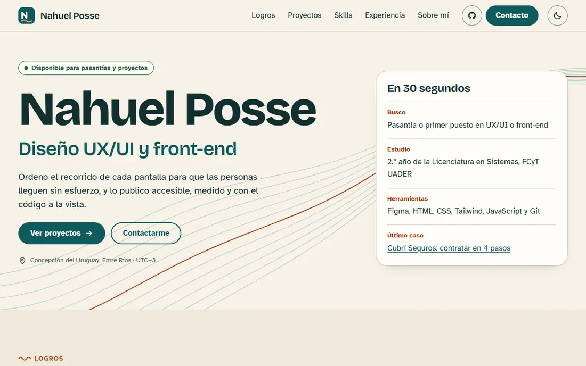
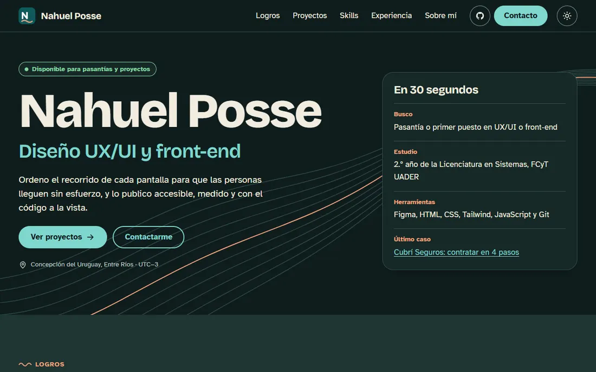

Caso de estudio · 2026
Este portfolio: diseñar para alguien que tiene 30 segundos
El sitio que estás viendo, del usuario objetivo al deploy automático. Es mi trabajo final de Diseño UX-UI.
- Mi rol
- Investigación, diseño y maquetado (individual)
- Contexto
- Trabajo final de Diseño UX-UI, FCyT UADER
- Herramientas
- Figma, HTML, CSS, JavaScript, GitHub Actions

1 · Problema
Medio minuto para causar una primera impresión
Un portfolio junior suele pelear contra dos cosas: la falta de experiencia laboral y el poco tiempo de quien lo mira. Imaginé a Laura, una líder de diseño que abre el link desde el celular entre dos reuniones y necesita saber rápido qué hago, qué busco y cómo contactarme.
Laura es una proto-persona: un supuesto de trabajo que todavía hay que contrastar con personas reales.
2 · Proceso
Primero el recorrido, después los colores
- Benchmark. Analicé tres portfolios y anoté qué funcionaba para quien evalúa. Me llevé la línea de tiempo con tags y la idea de copiar el email con un botón.
- Concepto. Definí tres palabras: claro, metódico y cercano. De ahí salió Cauce, con los colores del río Uruguay y sus barrancas.
- Arquitectura. Agrupé el contenido en tarjetas y decidí poner Proyectos antes que Skills: primero las pruebas, después las herramientas.
- Sistema. Armé wireframes y un design system en Figma, con los mismos tokens que usa el CSS.
3 · Solución
Decisiones pensadas para esos 30 segundos


- Tipografía legible. Atkinson Hyperlegible para el texto, pensada para distinguir cada letra.
- Contacto siempre a mano. Un botón fijo en el header y otro para copiar el email con un clic.
- Tarjetas clickeables. Toda la tarjeta abre el proyecto, con un único enlace para quien navega con teclado.
- Movimiento opcional. Las líneas del río y las transiciones se desactivan con
prefers-reduced-motion.
4 · Resultado
Lo que se puede medir
- 100 en las 4 categorías de Lighthouse mobile
- 0 violaciones de axe en 3 anchos y 2 temas
- 3 breakpoints sin scroll horizontal
Qué aprendí
Que un concepto simple ordena muchas decisiones: elegir “claro, metódico y cercano” me ahorró discutir cada color. Y que los números de una herramienta no alcanzan: Lighthouse dice si la página está bien hecha, pero no si Laura encuentra lo que busca. Por eso el siguiente paso es probarla con personas.